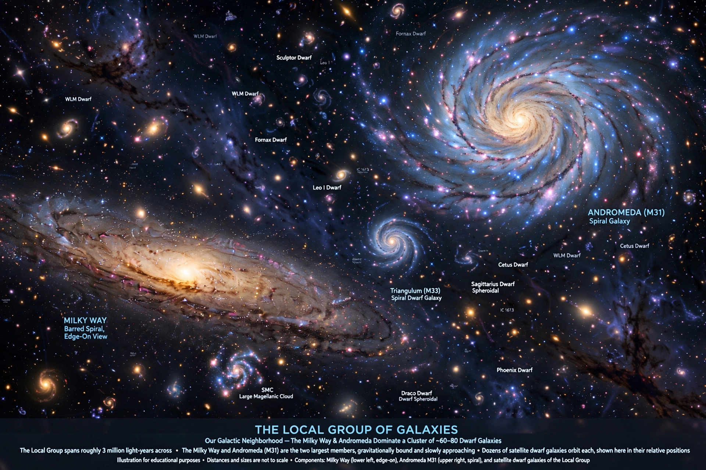

The Local Group is the galaxy group that includes the Milky Way, the Andromeda Galaxy and the Triangulum Galaxy. It comprises more than 80 known galaxies, most of them dwarf galaxies, extending roughly 10 million light-years across.

Edwin Hubble introduced the term in the 1930s. Its structure and dynamics are key to understanding galaxy formation and the expansion of the universe.
The two most massive members, the Milky Way and Andromeda, are spiral galaxies each surrounded by satellite dwarf galaxies such as the Large Magellanic Cloud and Triangulum companions. Andromeda and the Milky Way are expected to collide in about 4.5 billion years.
The group has a dumbbell shape centred between its two giants. Outside it lies the Local Sheet and the wider Virgo Supercluster, now considered part of Laniakea.